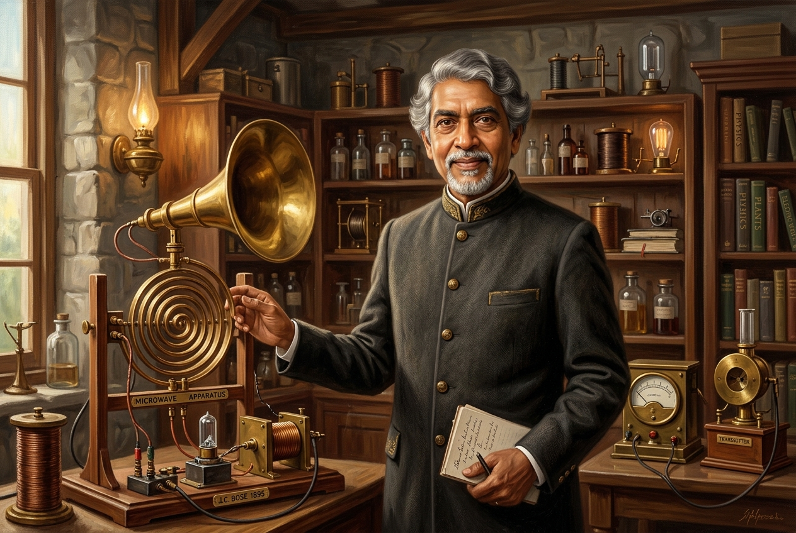
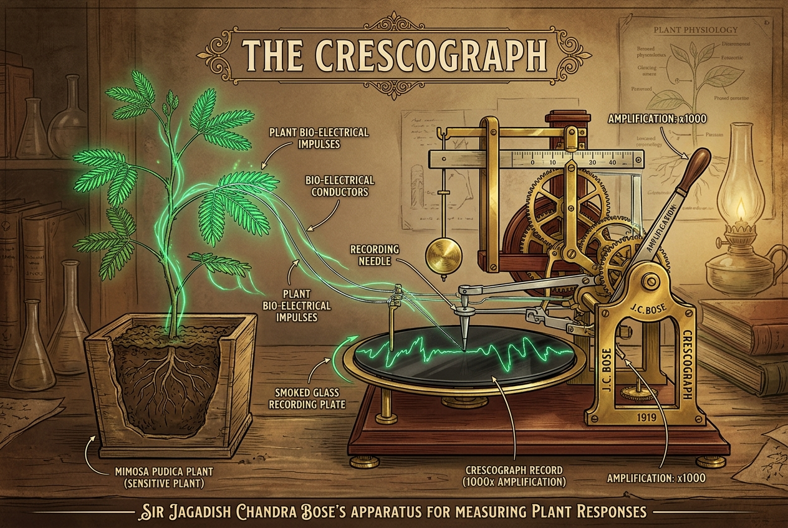

Explore his pioneering work in wireless physics and plant biophysics. Listen to the narration below or interact with the lab models.
In 1895, Sir Jagadish Chandra Bose pioneered millimeter-wave radio research in Calcutta, generating electromagnetic waves scaled to 5 millimeters. He designed the first microwave horn antennas, polarizers, and iron-mercury-iron coherers. Demonstrating wireless energy, he triggered a spark that passed through solid brick walls to ring a bell remotely, proving radio communications long before it was commercialized. Bose refused to patent his work, believing scientific truths belonged to the world.
Transitioning to biophysics, Bose proposed that physical systems and living tissues respond to stimuli in identical ways. He invented the Crescograph, magnifying minute plant leaf movements up to 10,000 times. With this scientific device, he proved plants possess nerve-like action potentials: they fatigue under continuous work, feel chemical poisons, respond to anesthetic chloroform, and release a final electrical spasm at the moment of death.
In 1917, he founded the Bose Institute, declaring it a temple where physics, chemistry, and biology merge under a philosophy of universal oneness. Bose successfully linked Eastern philosophical views of biological unity with rigorous Western empirical testing, proving barriers between the living and non-living are artificial. Today, J.C. Bose Hall stands in tribute to his legacy, wireless physics, and relentless curiosity.


Choose a mode: click the Hertzian spheres to transmit radio sparks, or stroke the plant leaves to chart impulses.
External references to explore his pioneering achievements further.
Read about J.C. Bose's life, his education at Cambridge, and his struggle for scientific independence.
Wikipedia PlaqueExplore the ongoing interdisciplinary scientific research conducted at the institute founded by Sir J.C. Bose.
Official InstituteRead the IEEE's recognition of J.C. Bose's contributions as the pioneer of millimeter-wave wireless optics.
IEEE PublicationBoth devices must be connected to the same Wi-Fi network.